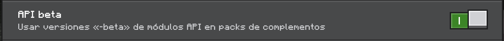

Sophisticangel backpack
By Angeldfire2 | v1.0.0
Sophisticangel backpack
Beta Version | v1.0.2
BETA


New Update v1.0.2:
BETA
- Aún no ha sido probado en Realms. Si tienes algún problema con ello, por favor repórtalo.
- Es necesario activar una opción experimental debido a las funciones beta 
- Ahora, para mostrar la mochila en la espalda del jugador, debe colocarse en el espacio del peto. Sin embargo, las funciones de las mejoras siguen activas incluso cuando no está equipada.
- Cada mochila ofrece la misma protección que una armadura común, dependiendo de su material.
- Se intentó optimizar aún más el addon y se corrigieron algunos errores reportados en Discord.
- Ahora el addon es totalmente compatible con una gran variedad de addons. A petición de los usuarios, se puede combinar con Action and Stuff y Better On Bedrock.
- Se optimizó la interfaz de usuario para corregir problemas anteriores.
Si encuentras errores, me ayudarías mucho reportándolos en Discord para seguir mejorando el addon.
ùêíùê®ùê©ùê°ùê¢ùê¨ùê≠ùê¢ùêúùêöùêßùê†ùêûùê• ùêÅùêöùêúùê§ùê©ùêöùêúùê§
¡Resuelva la falta de espacio en el inventario con nuevas mochilas mejoradas! Este complemento agrega al juego mochilas de cuero, cobre, hierro, oro, diamantes y netherite, cada una con más capacidad que la anterior. Además, estas mochilas se pueden personalizar y mejorar equipándolas con diversos accesorios. Diseñado para abordar uno de los problemas más comunes en Minecraft Bedrock, la falta de espacio en el inventario, este complemento es la solución perfecta para quienes aman explorar y coleccionar sin límites. ¡Lleva tu aventura al siguiente nivel y nunca más te quedes sin espacio!
üëæ ‚ãÑ ‚Äî„Äà Sophisticangel Backpack „Äâ‚Äî ‚ãÑ üëæ
Este es un complemento creado por @angeldfire2 con la ayuda de Angel's Community y algo de cooperación de los miembros de DarkBasementStudio. El complemento se basa esencialmente en el mod Java Sophisticated Backpacks creado por @P3pp3rF1y. Un agradecimiento especial para ellos por permitir el lanzamiento de este complemento.

Creador
Angeldfire2
Agradecimiento especial por la ayuda:
DarkbasementStudio
ÍóÉ‚ãÜ ‡£™ .Developer.‚Äπùü•
SenyuGamer
Manolo394
Angel's Comunity
EL RISAS XD
!ThekarTez
St4r crack
crissafio el mismísimo
JebusArt
Obed Millan
SirDrogas
üëæ ‚ãÑ ‚Äî„Äà Content „Äâ‚Äî ‚ãÑ üëæ
El addon Incluye:
Backpacks
- leather Backpack
- Copper Backpack
- Iron Backpack
- Gold Backpack
- Diamond Backpack
- Netherite Backpack
Aditaments
- Portable Farming
- Auto Food
- Portable Furnace Level 1 and 2
- Portable Jukebox
- Extra Hearts
- Item Magnet Level 1 and 2
- Mining Speed
- Dynamic Torch
- Auto Transfer Items
- Aquatic Breathing
- Container Liquid
- Discos de música para la mochila
Backpack Skins
- AmongUs
- Ajolote
- Iron Golem
- Snow Golem
- Jaar
- Manolo
- Nutria
- Bear
- Pig
- Rappi
- Warden
- Wither
- Fox
- Custom Colors

üëæ ‚ãÑ ‚Äî„Äà Aditaments „Äâ‚Äî ‚ãÑ üëæ
Portable Farming
Cuando está equipado, este accesorio agrega 3 ranuras a la mochila para semillas, que se plantan automáticamente cuando caminas sobre tierra cultivada.
Auto Food
Cuando está equipado, este accesorio permite al jugador almacenar comida en la mochila, y se consumirá automáticamente cuando el jugador tenga poca salud.
Portable Furnace
Cuando está equipado, este accesorio agrega un horno que se puede llevar a cualquier lugar, lo que le permite cocinar directamente desde la mochila.
Portable Furnace Level 2
Cuando está equipado, este accesorio agrega un horno con 4 ranuras adicionales para combustible.
Portable Jukebox
Cuando está equipado, este accesorio agrega un reproductor de música portátil que solo puede reproducir discos específicos para la mochila. (El sonido es individual para cada reproductor).
Extra Hearts
Cuando está equipado, este accesorio le otorga al jugador 4 corazones de salud adicionales.
Item Magnet
Cuando está equipado, este accesorio atrae objetos hacia el jugador dentro de un radio de 6 bloques.
Item Magnet Level 2
Cuando está equipado, agrega un filtro de objetos que atrae solo objetos filtrados dentro de un radio de 6 bloques a la mochila.
Mining Speed
Cuando está equipado, este accesorio le otorga al jugador el efecto Velocidad de minería IV.
Dynamic Torch
Cuando está equipado, este accesorio emite luz alrededor del jugador.
Auto Transfer Items
Cuando está equipado, este accesorio almacena automáticamente elementos del suelo en la mochila si el inventario del jugador está lleno.
Aquatic Breathing
Cuando está equipado, este accesorio le otorga al jugador la capacidad de respirar bajo el agua.
Container Liquid
Cuando está equipado, este accesorio le agrega a la mochila dos contenedores de liquidos (agua y lava)